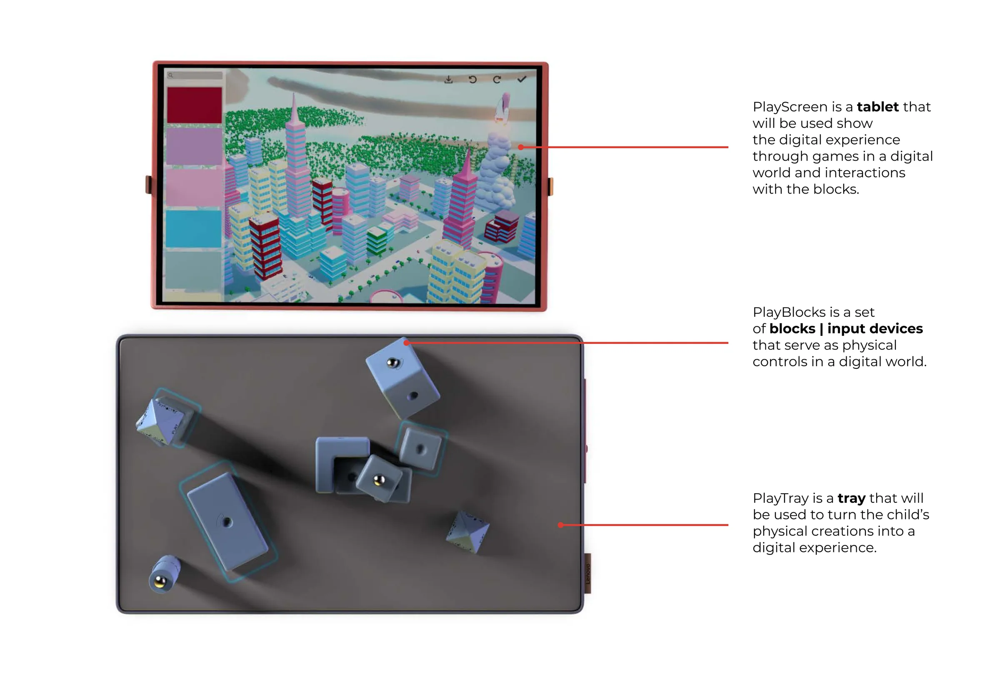
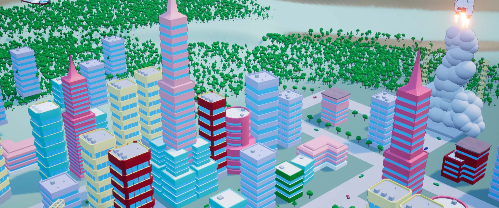
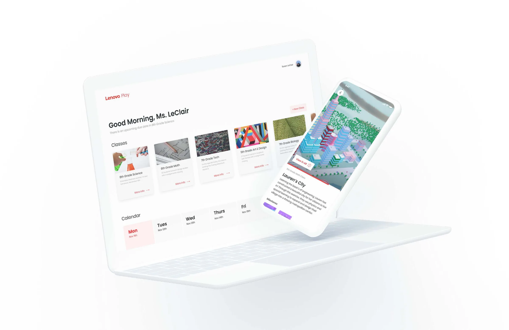
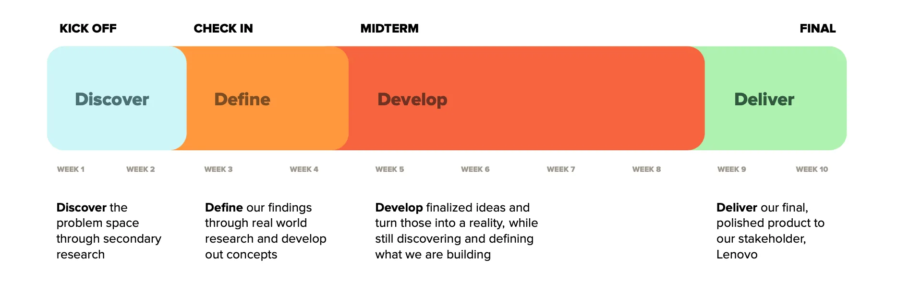
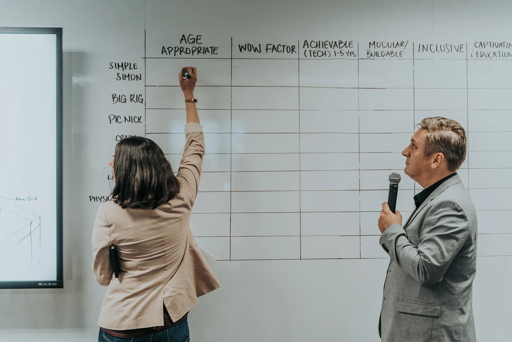
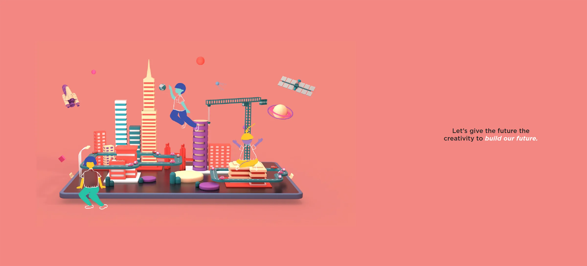
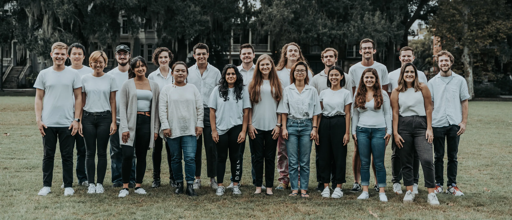

An educational toy and companion apps that introduce children to STEAM through play.
UX research
Product design
Toy + apps
The problem
How can we spark every child’s interest in STEAM through a fun, interactive physical experience, no matter their background?
Summary
To support Lenovo’s work encouraging more diversity among students considering STEAM careers, Lenovo partnered with SCAD to create an educational experience for young children. Our goal was to spark their interest in related career paths, in the hope of encouraging greater diversity in the industry.
Our solution
An educational toy that introduces children to STEAM through play. Using an interactive tray and smart blocks, children’s imaginations are turned into reality through a digital experience.
The product
Lenovo Play
Lenovo Play empowers children’s imagination and creativity through dynamic learning that shifts with whatever the child is creating. The blocks could be wood and steel for a bridge a car drives over, pieces of a rocket ship that launches into space through trial and error, or parts of a computer that come to life before their eyes.
The system
How it works
Lenovo Play is a system of physical and digital inputs working together to create an enriching experience for every child. The PlayScreen shows what happens as PlayBlocks are combined on the PlayTray. Together they’re the foundation for a multitude of experiences and discoveries.

The world
Digital experience
An intertwined narrative guides the learner and adds a dash of personality. It takes the form of a player-built hub world that grows in size and complexity as the learner spends more time with Lenovo Play and completes more complex activities. Learners build their city out of custom buildings and structures, giving them the freedom to express their own style.

For parents and teachers
Companion apps
The companion apps help parents and teachers engage with their learners and understand the value Lenovo Play brings to their education. Teachers can assign activities from the game catalogue and track each student’s progress to see who needs more help. Parents and guardians can see what their children are doing, how they’re getting on and how it benefits their learning in and outside the classroom.

Our process
Process, the short version
Timeline
Lenovo Play came together over 10 weeks in four phases: discover, define, develop and deliver.

Research
Research methods
We started by researching journals and articles about STEAM, education and child development, then developed a research plan. Over the 10 weeks we made two classroom visits, interviewing students from 6th to 8th grade as well as their teachers, and stayed to observe them learning. We recapped every interview to get the team on the same page, created an affinity map to find themes, and turned those themes into a design framework.
What we learned
One of the most interesting things we learned is how big the difference is between a 6th grader and an 8th grader when it comes to education. By 8th grade, kids tend to already have strong opinions about what they are and aren’t interested in, and all of our research pointed to younger kids being more open to learning. So we pushed to change Lenovo’s target audience from 12–14 to 8–12 year olds.
Ideation

We created around 30 prompt questions tied directly to our research findings, and everyone in the room created a concept for each one, giving us around 240 concepts from the initial workshop. The strongest ideas went through a rubric scoring whether they were age appropriate, had a wow factor, were achievable in 1–5 years, were modular or buildable, were inclusive, and were captivating and educational. From there we refined and combined features from the highest-scoring designs into 9 initial concepts, reviewed with Lenovo executives for their feedback.
Final product

Lenovo Play allows for dynamic learning that constantly shifts depending on what the child is creating. The blocks could be wood and steel for a bridge, pieces of a rocket ship, or parts of a computer that come to life before their eyes. It’s a blank slate powered by the endless possibilities of the child’s imagination.
What I learned

The Lenovo SCADpro was the class where I grew the most as a designer at SCAD. It was my first time working with a real client, with so many majors, and with a team this large, and it prepared me for my professional career more than any other class. My biggest takeaway was learning how to keep a large group on the same page and working towards the same goal. There were bumps and learning curves along the way, but it played a pivotal role in shaping the designer I am today.
Want the full story? The process book covers all 10 weeks, including research, ideation, wireframes and final designs.